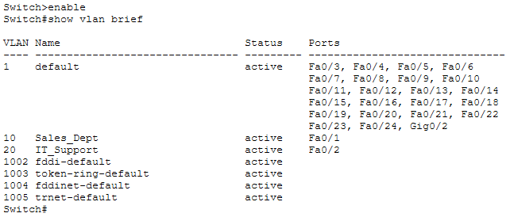
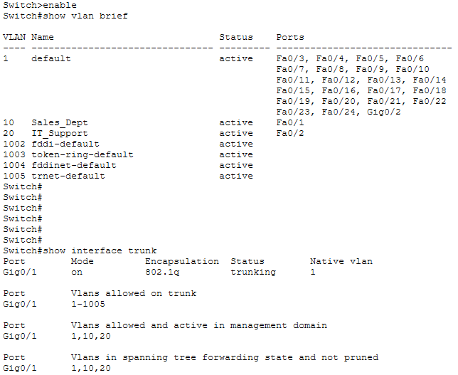

An unsegmented switch fabric is a single broadcast domain. Every ARP request, every DHCP discovery, every infected host's traffic storm reaches every port on the switch — which means a compromised workstation in Sales can reach the IT Support subnet without leaving the Layer-2 plane. VLANs are the primary defence against that lateral movement, and they cost nothing but configuration effort.
This engagement demonstrates the full lifecycle of Layer-2 segmentation on a Cisco managed switch: constructing isolated broadcast domains, formatting the inter-switch uplink to carry tagged traffic for multiple VLANs, and restoring controlled Inter-VLAN routing at Layer 3 through a Router-on-a-Stick configuration. The goal is containment — physical switch, logical separation, zero cross-VLAN leakage.
All configurations were deployed inside an isolated lab topology. VLAN numbering follows the common practice of avoiding VLAN 1 for production data traffic — a well-documented security consideration because VLAN 1 is the default native VLAN and is often reachable from any port with default configuration.
VLAN Database Provisioning
Two department-specific VLANs were constructed to establish hard Layer-2 boundaries inside the switching fabric. Each VLAN was given a semantic name rather than a bare number, so the configuration self-documents in production operations:
Switch>enable
Switch#configure terminal
Switch(config)#vlan 10
Switch(config-vlan)#name Sales_Dept
Switch(config-vlan)#exit
Switch(config)#vlan 20
Switch(config-vlan)#name IT_Support
Switch(config-vlan)#exitWith the VLAN database populated, individual switchports were bound to their respective segments as access ports. An access port belongs to exactly one VLAN — any frame arriving on that port is automatically tagged with the port's VLAN membership, and any frame forwarded out of that port has its tag stripped before transmission to the end device:
! Bind port Fa0/1 to the Sales segment
Switch(config)#interface FastEthernet0/1
Switch(config-if)#switchport mode access
Switch(config-if)#switchport access vlan 10
Switch(config-if)#exit
! Bind port Fa0/2 to the IT Support segment
Switch(config)#interface FastEthernet0/2
Switch(config-if)#switchport mode access
Switch(config-if)#switchport access vlan 20
Switch(config-if)#exitThe end hosts on those two ports are now physically connected to the same switch chassis but logically on different networks. A broadcast emitted by the Sales host on Fa0/1 will never reach the IT Support host on Fa0/2 — the switch enforces the boundary in hardware, at wire speed, without any software filtering overhead.
IEEE 802.1Q Trunking
Access ports carry one VLAN. To move multiple VLANs between switches — or between a switch and a router — the interconnecting link must be formatted as a trunk. A trunk carries frames from every permitted VLAN over a single physical wire, with each frame tagged using the IEEE 802.1Q standard: a 4-byte header inserted into the Ethernet frame that identifies which VLAN the frame belongs to.
! Format the GigabitEthernet0/1 uplink as an 802.1Q trunk
Switch(config)#interface GigabitEthernet0/1
Switch(config-if)#switchport trunk encapsulation dot1q
Switch(config-if)#switchport mode trunk
Switch(config-if)#exitThe 802.1Q tag exists only on the trunk itself. At the far end — whether another switch or a router subinterface — the tag is read, the frame is delivered to the correct VLAN context, and the tag is stripped before the frame reaches the destination end device. The end host never sees a tagged frame; from its perspective it's on an ordinary network.
The native VLAN is a special case: frames
belonging to it traverse the trunk untagged. By default
this is VLAN 1 on Cisco equipment, which is why security best
practice recommends changing the native VLAN to a dedicated unused
ID. In this lab the native VLAN remains at its default, and
access-port traffic is only assigned to VLANs 10 and 20 — but the
config that would harden this in production is a one-line change
(switchport trunk native vlan 999).
Router-on-a-Stick Inter-VLAN Routing
Layer-2 isolation alone would leave the two departments unable to reach each other — which defeats the purpose of running a shared corporate network. Inter-VLAN routing reconnects them at Layer 3, where policy can be applied. The classic implementation is Router-on-a-Stick: a single physical router interface, divided into virtual subinterfaces, each serving as the default gateway for one VLAN.
First, the parent interface is stripped of any IP address to eliminate routing conflicts, then brought up. It carries no logic of its own — it exists only to host the subinterfaces:
! Strip the parent interface — it becomes a container only
Router>enable
Router#configure terminal
Router(config)#interface GigabitEthernet0/0
Router(config-if)#no ip address
Router(config-if)#no shutdown
Router(config-if)#exit
The two subinterfaces are then provisioned. Each one is bound to a
specific VLAN ID via the
encapsulation dot1Q directive, and assigned an IP
address that becomes the default gateway for every host on that
VLAN:
! Subinterface for Sales (VLAN 10)
Router(config)#interface GigabitEthernet0/0.10
Router(config-subif)#encapsulation dot1Q 10
Router(config-subif)#ip address 192.168.10.1 255.255.255.0
Router(config-subif)#exit
! Subinterface for IT Support (VLAN 20)
Router(config)#interface GigabitEthernet0/0.20
Router(config-subif)#encapsulation dot1Q 20
Router(config-subif)#ip address 192.168.20.1 255.255.255.0
Router(config-subif)#exit
The encapsulation dot1Q 10 directive is what ties the
subinterface to its VLAN. When a tagged frame arrives on the parent
interface with a VLAN ID of 10, the router recognises the tag,
delivers the frame into the g0/0.10 subinterface
context, and routes it based on the destination IP. The return path
works the same way in reverse — the router tags the outbound frame
with VLAN 10 before transmitting it back down the trunk.
Verification & Performance Results
Two independent verification passes confirmed the configuration was deployed correctly and behaving as designed. Each pass audits a distinct layer of the design — first the static VLAN database, then the dynamic trunk state — and both must agree for the segmentation to be considered operational.
VLAN database and port assignment
The show vlan brief output confirms both department
VLANs are active with the correct access ports bound. Sales on
Fa0/1, IT Support on Fa0/2, and every
other user-facing port remains on the default VLAN 1 — which means
the segmentation boundary is enforced exactly where intended and
nowhere else:

show vlan brief diagnostics confirming the VLAN
database provisioning. Sales_Dept (VLAN 10) is bound to
Fa0/1, IT_Support (VLAN 20) is bound to
Fa0/2, and all remaining user ports stay on the
default VLAN 1 — establishing the intended segmentation boundary.
Trunk negotiation and forwarding state
The show interface trunk output confirms the uplink is
operating as an 802.1Q trunk in static "on" mode, with VLANs 1, 10,
and 20 both allowed across the trunk and actively
forwarding in the management domain. The spanning-tree
state matching the allowed list means no VLAN is being unexpectedly
pruned:

show interface trunk diagnostics confirming
Gig0/1 is operating as an active 802.1Q trunk. VLANs
1, 10, and 20 appear in all three verification columns — allowed,
active in the management domain, and forwarding in spanning tree —
proving the trunk is carrying every department VLAN without
unexpected pruning.
- Absolute broadcast domain isolation. Layer-2 boundaries were enforced at the switch fabric, containing potential malware propagation and background storm traffic. A broadcast storm in Sales cannot reach IT Support, and vice versa.
- Full Inter-VLAN packet delivery — 0% data loss. Re-routing internal communication loops through the Router-on-a-Stick gateway layer validated end-to-end packet delivery across the segment boundary. Hosts in VLAN 10 can reach hosts in VLAN 20 via the router, but only through the Layer-3 gateway where policy can be applied.
-
Dual verification confirms intent. The
show vlan briefoutput proves the static configuration; theshow interface trunkoutput proves the dynamic state matches it. A misconfiguration in either direction would surface as a mismatch — the trunk would be up but a VLAN would be missing from the active domain, or a VLAN would be configured but not forwarding.
Containment control confirmed. The switch now behaves as multiple independent Layer-2 networks on shared hardware, with controlled Layer-3 routing between them. Any future security policy — firewall rules, ACLs, IDS inspection — can now be applied per-VLAN rather than per-port, which is the foundation of enterprise network security architecture.
Security & Data Privacy Note
The configuration presented here reflects lab topology only. Production switch configurations typically include additional hardening — a non-default native VLAN, unused ports administratively disabled and assigned to a quarantine VLAN, BPDU Guard and PortFast configured on all access ports, and DHCP snooping enabled on all user VLANs. Those controls are documented as recommended next steps but are outside the scope of this lab exercise.